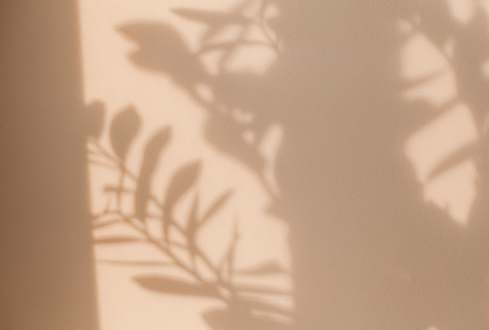

2025/02/10
2. 心に残る言葉

「相手の持っているものの中で自分が欲しいものと、自分の持っているものの中で相手が欲しがるものとを、お互いがちょうどいいと思う量で交換している。」 この言葉に、私は深い衝撃を受けた。ごく当たり前のことのようでありながら、言葉として示されることで、その本質に初めて気づかされたのだ。 さらに、続く言葉が私の価値観を大きく変えた。 「もし、ほしいものを手に入れる方法として“買う”ことしか思いつかなければ、それは、自分が持っているもので相手が欲しがるものが“お金”しかないと無意識のうちに認めている生き方をしているということだ。」 この考え方は、私にとって衝撃的だった。自分を磨けば磨くほど、内面に蓄えられる価値が増し、相手が求めるものも多様になっていく。お金だけでなく、スキルや経験、人間性そのものが価値となり、誰かの役に立つ存在になれる。 この言葉に出会ったことで、私は自分を磨くことの大切さを強く意識するようになった。そして、未知の世界に飛び込み、新たな挑戦を重ねるようになった。今回の留学も、その延長にある。